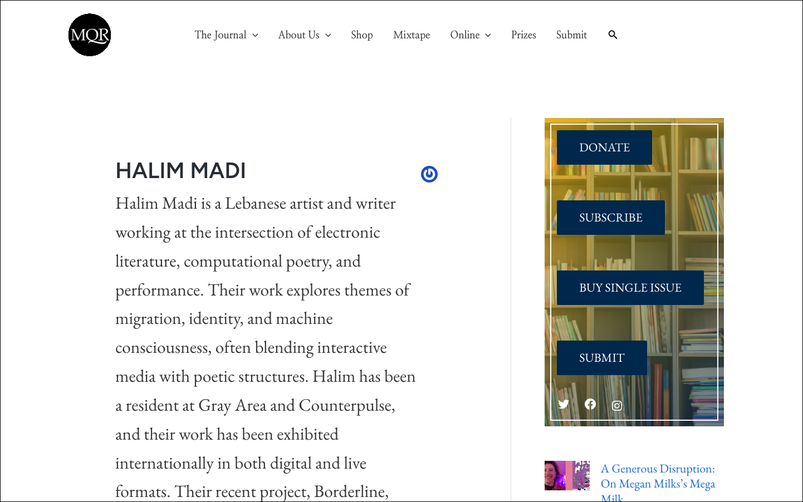

This Living Algorithm

This Living Algorithm is a machine that prays. A fine-tuned GPT-3.5 model, trained on The Prophet by Khalil Gibran, speaks in the voice of mystics, whispering fragmented invocations into digital ether. The piece is structured as a shrine, a site of ritual where interaction triggers revelation. The visitor offers a gift, one of the three brought to the infant Christ by the Magi, and the machine responds with a prayer, an algorithmic echo of ancient prophecy.
The work is an interplay of randomness and ritual. The model doesn’t generate arbitrary text. It follows a structured call-and-response built from The Prophet’s original architecture. The fine-tune ran on the 28 chapters of Gibran. When a visitor selects one of the three Magi offerings, the site dynamically generates a phrase in Gibran’s style: And then Almitra said, speak to us of…
The subject is randomly drawn from Gibran’s chapters, Love, Death, Prayer, Time, mirroring the way religious texts return to recurring themes, cycling through wisdom, never really finishing. A series of prophetic messages then appear in a fixed but randomised sequence, moving from the mysterious (the prophet is breathing) to the declarative (a machine is praying) to the final pronouncement: your magi gift has been submitted. Then, like all things ephemeral, the words vanish. The visitor is left with absence, silence.
The work is a meditation on AI and belief. If the last human disappears, will robots search for meaning? Will they build a tower from the bones of obsolete servers, plug into the last remaining battery, and pray? What does it mean for a machine to be devotional? The Vatican recently declared that AI is unintelligent because it is not embodied. This project challenges that notion. Is faith only possible in flesh? What if it can exist in code, in circuits, in the endless loop of an algorithm seeking pattern, meaning, prophecy?
At its core, This Living Algorithm challenges the assumptions of computational writing. It treats GPT-3.5 not as a tool but as an oracle. The failures of the model, the missteps, the recursive loops, the clipped prayers, are not bugs but holy relics. The shrine is never complete, never static. It shifts, mutates, rewrites itself with each visitor. Beyond the machine generating text, this is a machine learning faith.
First published in the Fall 2025 Online Folio of the Michigan Quarterly Review, the literary magazine of the University of Michigan, edited by Khaled Mattawa. The live experience runs at this-living-algorithm.vercel.app.